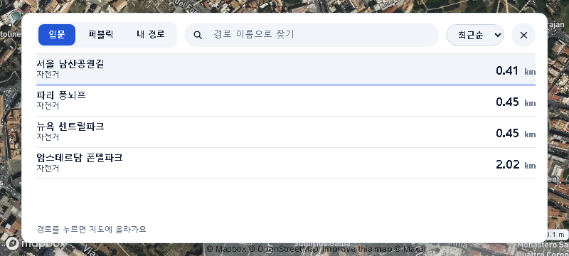
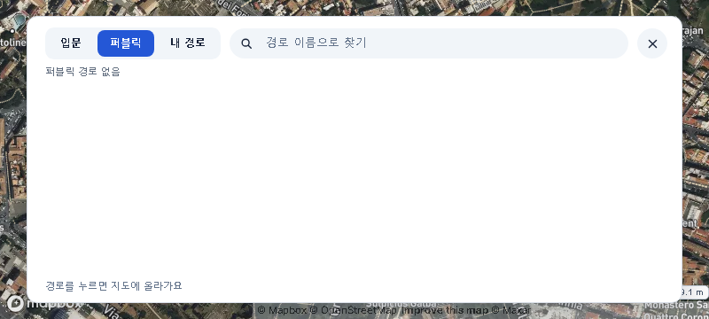
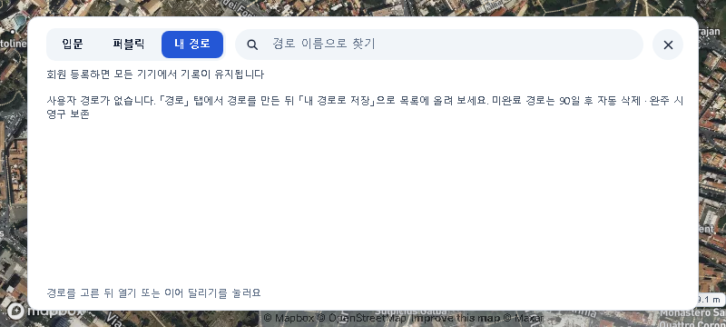
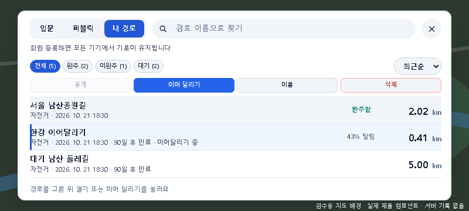

정지 상태 경로 목록 · 가독성 우선
2026-10-23 Chief 지시 반영. 입문·퍼블릭·내 경로는 불투명 흰 패널과 어두운 글자. 주행 중 라이더 순위 표시는 기존 투명 배경 유지.
입문
이전 · 실제 App(에뮬레이터) 보완 · 실제 App(에뮬레이터)
보완 · 실제 App(에뮬레이터)
퍼블릭
이전 · 실제 App(에뮬레이터) 보완 · 실제 App(에뮬레이터)
보완 · 실제 App(에뮬레이터)
내 경로
이전 · 실제 App(에뮬레이터) 보완 · 실제 App(에뮬레이터)
보완 · 실제 App(에뮬레이터)
내 경로 · 항목과 관리 도구가 있는 상태
실제 제품 컴포넌트 · 메모리 예시 데이터 · 800×360
실앱 에뮬레이터의 내 경로는 빈 상태이며, 항목·선택·이름 변경·삭제·이어달리기는 예시 데이터 프리뷰로 함께 확인했다. 지도와 목록 데이터는 촬영 시점에 따라 다르다.